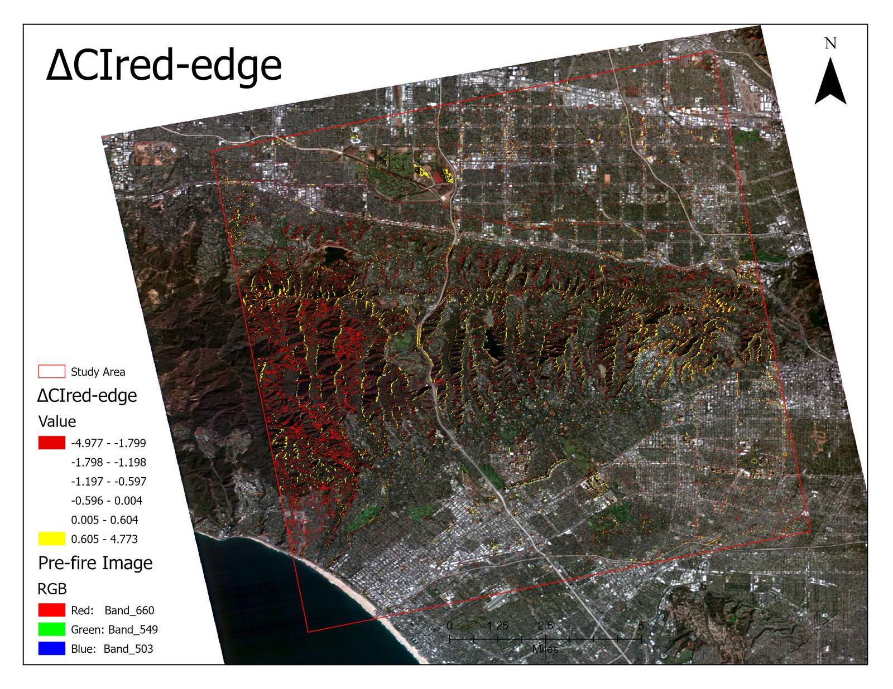
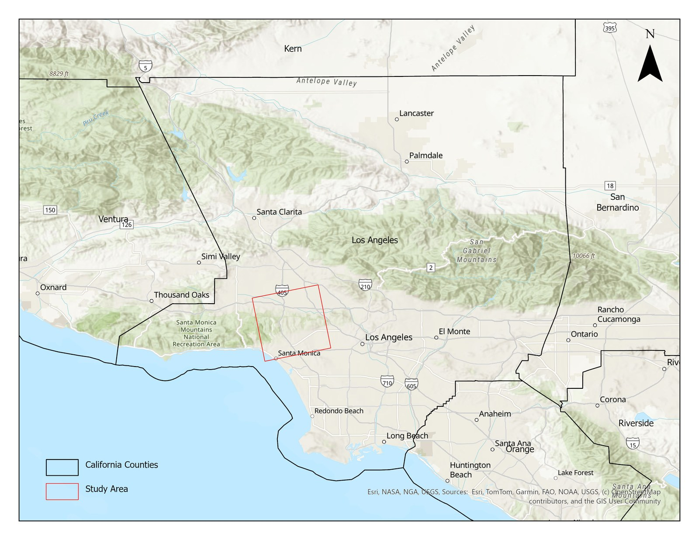
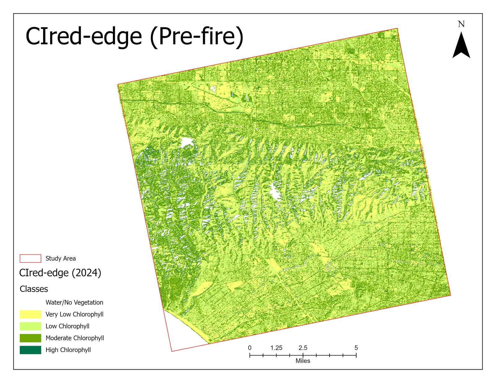
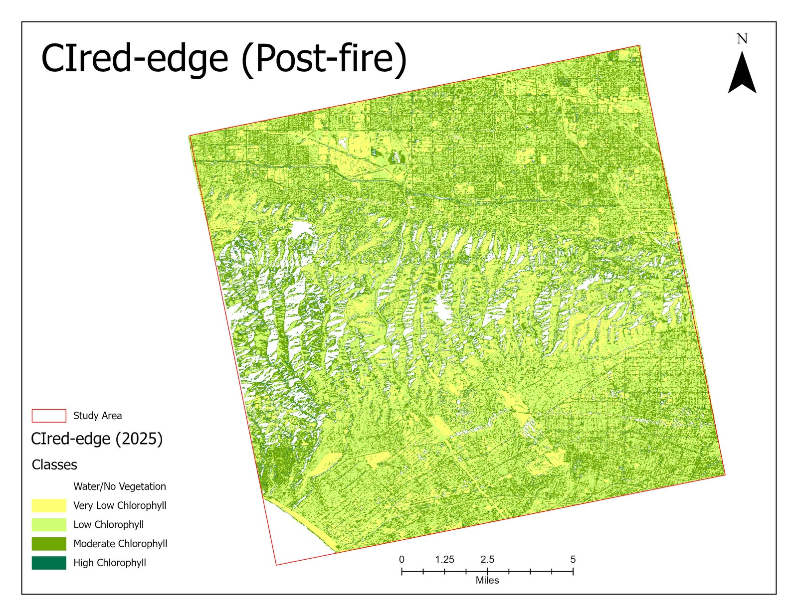
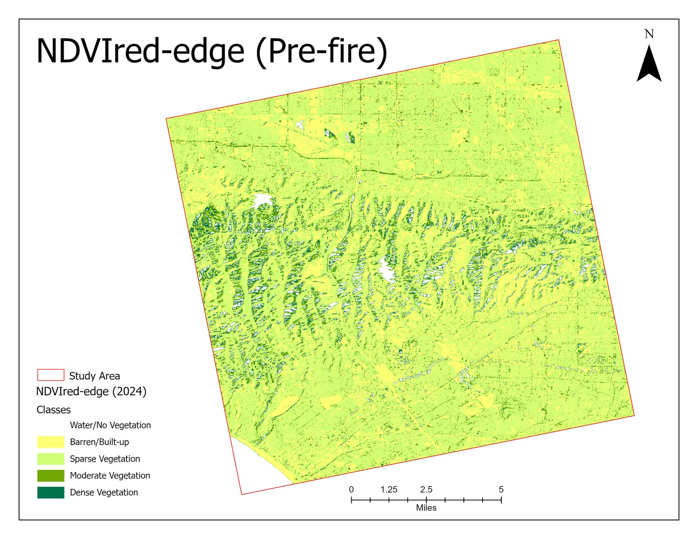
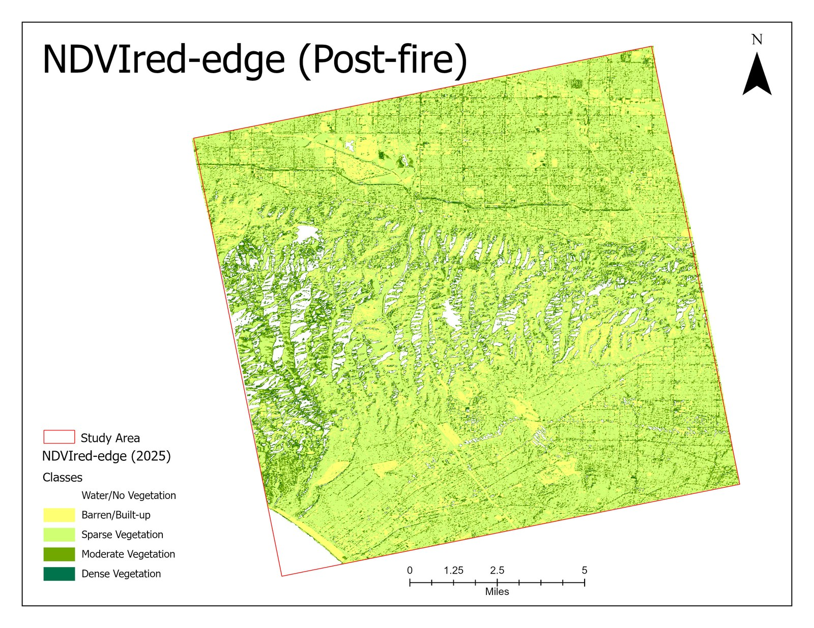

Problem & goal
The Palisades Fire struck a coastal chaparral wildland–urban interface with steep terrain, damaging vegetation and infrastructure. The goal was to map where vegetation was lost and how severe the burn was, to support recovery monitoring and fire-risk planning.
Index-based change detection turns two satellite images into a clear, quantitative map of vegetation damage.
Data
- Sensor: Wyvern Dragonette-001 commercial VNIR hyperspectral.
- Resolution: 5.3 m, 23 bands (500–800 nm), 12-bit.
- Pre-fire: 04 Nov 2024 · Post-fire: 23 Jan 2025.
- Bands used: red-edge (b20 ~750 nm), NIR (b23 ~799 nm).

Methodology
- Visual co-registration check and multipoint geometric correction (total RMS error 0.0002).
- Select red-edge (b20) and NIR (b23) bands from the hyperspectral cube.
- Convert radiance to TOA reflectance using image metadata.
- Stack bands and re-project WGS84 → WGS 1984 UTM Zone 11N.
- Compute CIred-edge and NDVIred-edge for both dates.
- Difference (post − pre) to produce change maps; negative Δ = vegetation loss.
Results
Vegetation loss concentrated in forested hilltops with high burn severity, while urban/built-up areas showed little change. Both indices agreed spatially, confirming the pattern: CIred-edge captured chlorophyll loss and NDVIred-edge captured structural canopy loss.
CIred-edge — pre vs. post


NDVIred-edge — pre vs. post


What I would improve next
- Calibrate severity thresholds against field or dNBR reference data.
- Add atmospheric correction (surface reflectance) for cross-sensor robustness.
- Validate against an independent burn-perimeter dataset.